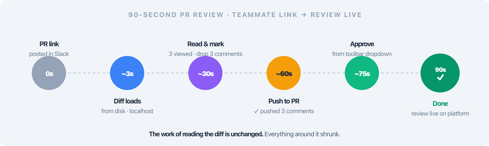
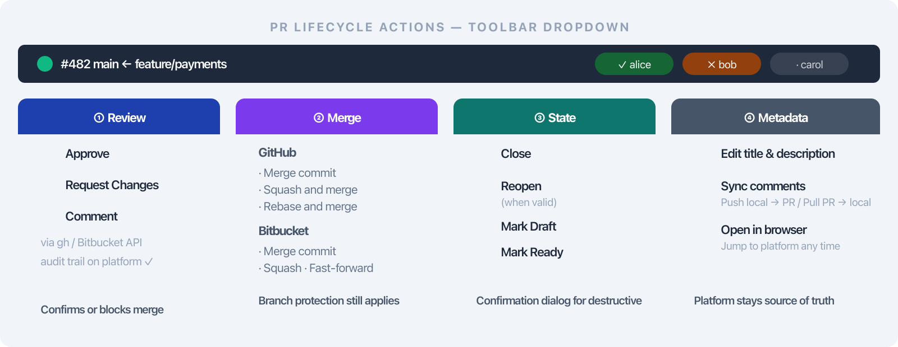

Deck 06 · branchdiff features
Kill the tab-switching tax.
Persistent sessions, two-way comment sync, the full PR lifecycle from one toolbar, and branches fetched before comparison — twenty tab switches collapsed into one.
session main..feature
port 5391
sync two-way
forge GitHub · Bitbucket
02 · the problem
Ten minutes of reading. Twenty tab switches.
- PR → editor → PR → Slack → AI → PR. Every action is a context switch; every switch costs attention you don't get back.
- Force-push resets your place. Author rebases mid-review — your viewed markers and inline notes are gone.
- Every forge action is a cloud round-trip. Approve, merge, request changes — each is a page load on a slow connection.
- Stale local branches. Comparing against a branch you haven't checked out in weeks — the diff is fiction.
The result: review becomes a chore of window management. You stop reading carefully because the tooling fights you, not because the code is fine.
03 · the solve
Four pillars — one toolbar, no tab carousel.
branchdiff collapses the PR-review loop into one local surface: a session that survives force-pushes, sync that pushes and pulls comments, the full PR lifecycle from a dropdown, and branches fetched before comparison so the diff is real.
before · the loop
Twenty tab switches per PR. Force-push wipes your place. Approve/Merge live on a slow web page. The branch you're comparing against is weeks stale.
after · one toolbar
One persistent session. Push and pull comments in one click. Approve, request changes, merge, close — all from the toolbar. Branches fetched and fast-forwarded before the diff renders.
The flow: open the PR locally once → read, comment, sync, act → done. No forge round-trips until you choose to merge.
04 · persistent sessions (G6)
A review session that survives new commits.
- Named-pair persistence. branchdiff main..feature keeps comments and viewed markers across new commits — even after a force-push.
- --new archives & restarts. Want a clean slate? The old session is archived, not deleted.
- PR-number auto-reset. Notices when the PR number changes — archives the old session, starts fresh.
- Per-(repo + machine) state. Each ref pair gets its own port from 5391; sessions don't bleed.
Why it matters: the author rebases three times mid-review. Your twelve inline comments and the seven files you marked viewed are all still there when you reload.
05 · multi-session & isolation
One session per ref pair — no cross-talk.
- Run several reviews in parallel — each pair lands on its own port.
- --detach runs the server in the background; close the terminal, keep reviewing.
- Close from the browser — /api/kill shuts the server down without a terminal hop.
- AI review isolation: one AI, one session. Resolution order BRANCHDIFF_SESSION_ID → --session → --port → last-active.
5391+
ports
one per ref pair, ascending
∞
sessions
per repo, per machine
4
resolution
env → flag → port → last
Hands-on: start a detached session, review from the browser, close it from the same browser when you're done — terminal freed for something else the whole time.
06 · open any PR locally (G7)
Paste a PR URL. Read it locally.
~/repo
$ branchdiff https://github.com/owner/repo/pull/123
# → git fetch (never git checkout)
# → resolves base & head refs
# → opens localhost:539X in browser
# → first-open preview-pull badge appears
- GitHub or Bitbucket. Same command, same UX — forge detection is automatic.
- git fetch, never git checkout. Your working tree stays exactly where you left it.
- First-open preview-pull badge. Existing PR comments are pulled on demand — never a surprise.
- Works from anywhere. Slack link, email, terminal — paste the URL, start reading.
07 · two-way comment sync
Push, pull, or sync all — comments land on both sides.
- Push to PR. Single-comment threads become inline review comments; duplicates skipped automatically.
- Pull from PR. Bring collaborator comments back into your local view.
- Sync All. One button — both directions, conflicts resolved by last-write.
- Per-thread sync badge. Green dot = synced with PR; amber dot = local-only, not yet pushed.
- Persistent status bar. At-a-glance sync state across the whole review.
Multi-reply threads stay local. Forge APIs don't map a back-and-forth onto their flat inline-comment model — those threads sync to your machine only, never accidentally split across the PR.
08 · PR lifecycle from toolbar (G7)
Every PR action — one dropdown.
- Approve — with optional approve-with-comments checkbox.
- Request changes — with push-before-request-changes checkbox so new threads land first.
- Comment — general PR comment without approve/request.
- Merge — strategy picker (merge commit / squash / rebase).
- Close / Reopen.
- Mark Draft / Ready for review.
- Edit title & body without leaving the page.
Header state dot + reviewer pills live on the toolbar — PR state is one glance away, not a page navigation.
Create PRs from the UI too. Title, body, base, head — same surface you're already reviewing in.
09 · the 90-second flow
The whole loop — ninety seconds.

open PR → read locally → comment → sync → act · one toolbar, one tab
10 · lifecycle action groups
The toolbar, by group.

approve · request · comment · merge · close · reopen · draft · ready · edit
Actions are grouped by review intent — read, decide, act — so the next step is always one click from where your cursor already is.
- Decide: Approve / Request changes / Comment.
- Act: Merge (with strategy) / Close / Reopen.
- State: Draft / Ready / Edit title & body.
11 · the CLI (G11)
Every action is scriptable.
~/repo
$ branchdiff pr merge --strategy squash
$ branchdiff sync # push + pull
$ branchdiff pr approve --with-comments
$ branchdiff pr request-changes --push-first
$ branchdiff session archive
$ branchdiff list # all running sessions
$ branchdiff killall
- pr — info / create / merge / approve / request-changes / close / reopen / draft / ready / edit / comment.
- sync — push / pull / push-thread.
- session — current / archive / history / delete.
- list · killall · kill · open · prune — manage running sessions.
- Scope: list current, killall current — act on the active repo only.
- doctor · info · update · version · state reset — health, repo fingerprint, self-update.
- Shell completion (bash + zsh) and offline guide / changelog.
12 · branch sync (G16)
Branches fetched & fast-forwarded before the diff.
- Not-here-but-remote: created locally with tracking.
- Behind remote: fast-forwarded automatically.
- Diverged: left alone with a warning — branchdiff never silently rewrites your history.
- Dirty checkout: left alone — your uncommitted work is sacred.
- Remote branches created from the remote ref directly.
- --no-sync skips the whole step when you want to inspect stale-on-purpose.
Stale-code review refusal. If the local branch is behind what you're reviewing against, branchdiff refuses to render — --allow-stale overrides when you really mean it.
Why it matters: the diff you read is the diff that exists on the remote — not a fiction your local checkout invented three weeks ago.
13 · honest boundaries
What branchdiff does not do.
- No CI. Platform checks still gate the merge — branchdiff renders them, it doesn't replace them.
- No multi-reply thread push. Forge APIs don't map back-and-forth threads onto flat inline comments.
- No branch-protection bypass. Merge respects required reviews and status checks exactly as the forge enforces them.
- Not a full PR-page replacement. Description, linked issues, CI block stay on the forge — Open in browser is one click.
The honest framing: branchdiff is the fastest way to read, comment, and act on a PR. It complements the forge — it doesn't pretend to be it.
14 · recap
Twenty tabs, collapsed to one.
Persistent sessions, two-way sync, the full PR lifecycle from a toolbar, and branches fetched before comparison — the entire review loop fits in one browser tab.
- Sessions survive force-pushes; --new archives & restarts; PR-number auto-reset.
- Multi-session per repo/machine; AI isolation; --detach; close from the browser.
- Open any PR URL locally — GitHub or Bitbucket, git fetch never checkout.
- Push / pull / Sync All with per-thread sync badges and a persistent status bar.
- PR lifecycle from the toolbar: approve, request, merge (with strategy), close, reopen, draft, ready, edit.
- Full CLI — pr, sync, session, list, killall — plus shell completion.
- Branches fetched & fast-forwarded; stale-code review refused unless --allow-stale.